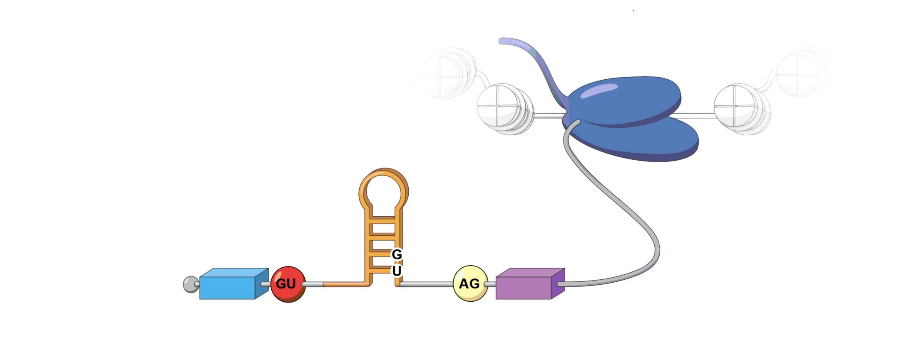
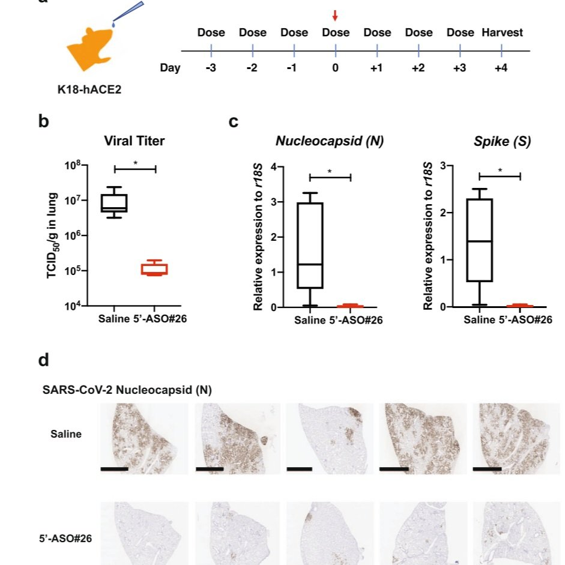
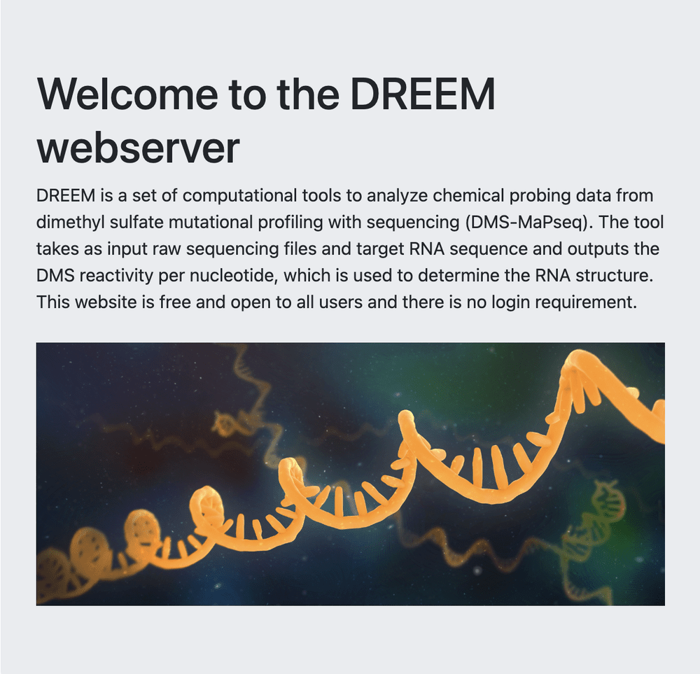
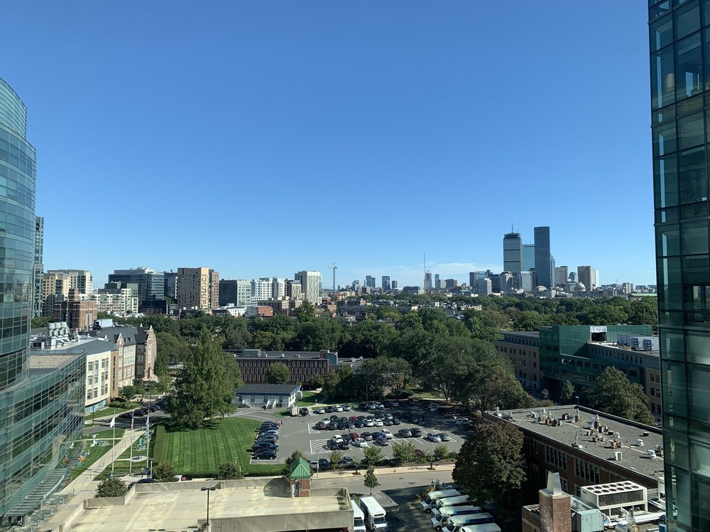
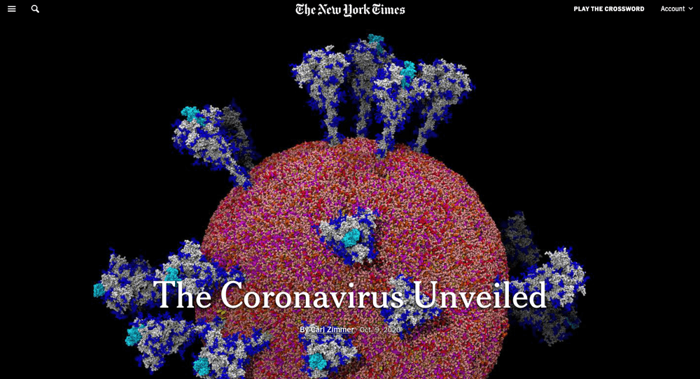
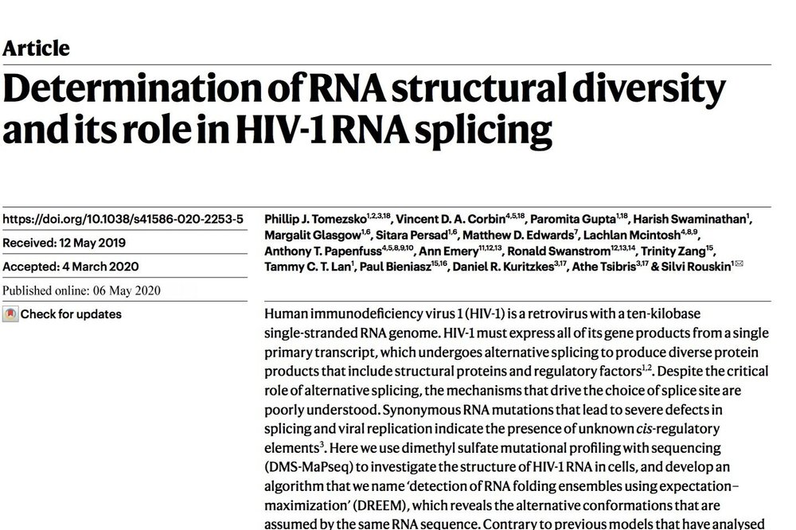
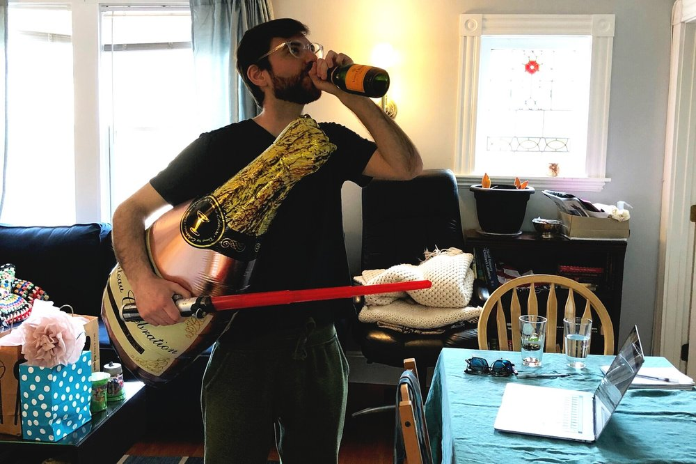
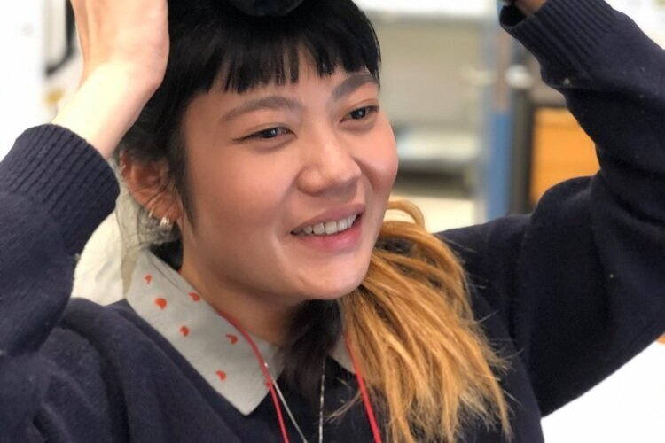
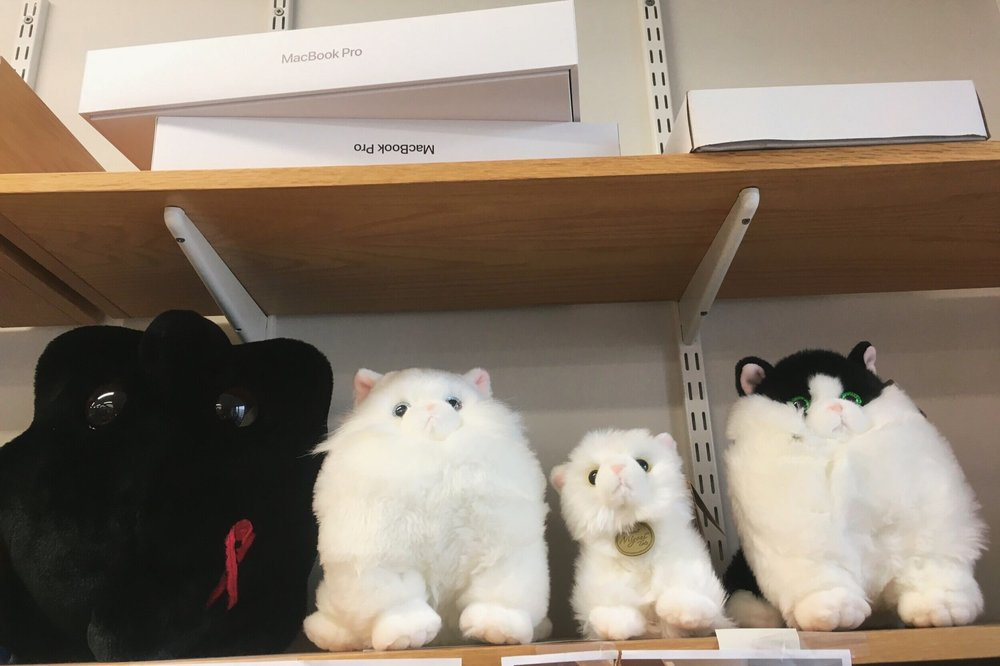

Award
Congratulations to the winners of NextEpoch 2024
Lab update celebrating trainees recognized through the NextEpoch 2024 program.
News & media
A running record of work coming out of the lab — new publications, external press, talks, and the people moving on to next things.

Award
Lab update celebrating trainees recognized through the NextEpoch 2024 program.

PNAS
Collaboration with Gad Frankel's group at Imperial College London — an RNA structural element drives recurrent antibiotic resistance.

Nature Communications
Collaboration with Anders Näär's group on an inhaled antisense oligonucleotide that targets a structured region of the SARS-CoV-2 genome.

Tools
A web-based interface for chemical probing analysis from raw sequencing files, developed with Joseph Yesselman's group.

Nature Communications
The lab's whole-genome RNA structure work on SARS-CoV-2 appeared in Nature Communications.

Lab milestone
Rouskin Lab settled into NRB 930 at HMS, our home base for the next phase of the lab.

Press
External coverage of the lab's SARS-CoV-2 RNA structure mapping.

Press
External coverage of alternative HIV RNA structures and their role in viral gene regulation.

Nature
The lab's flagship paper on alternative RNA structures in HIV-1 was published in Nature.

Lab milestone
Lab celebration for Phil Tomezsko's successful thesis defense.

Lab milestone
Trainee milestone — onwards to grad school.

Lab milestone
The lab welcomed new undergraduate researchers from MIT's UROP program.
Lab milestone
Sherry worked on alternative splicing and structure of SMN1 and SMN2.
Lab milestone
Stuti worked on tau alternative structure and splicing with Tammy.